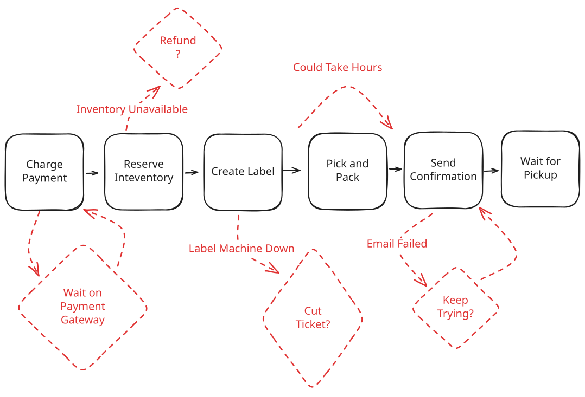
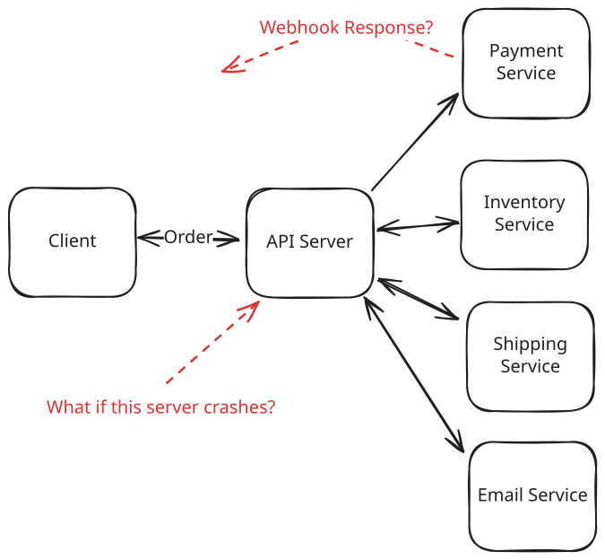
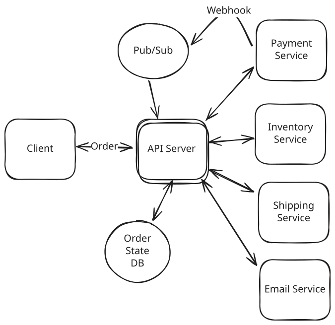
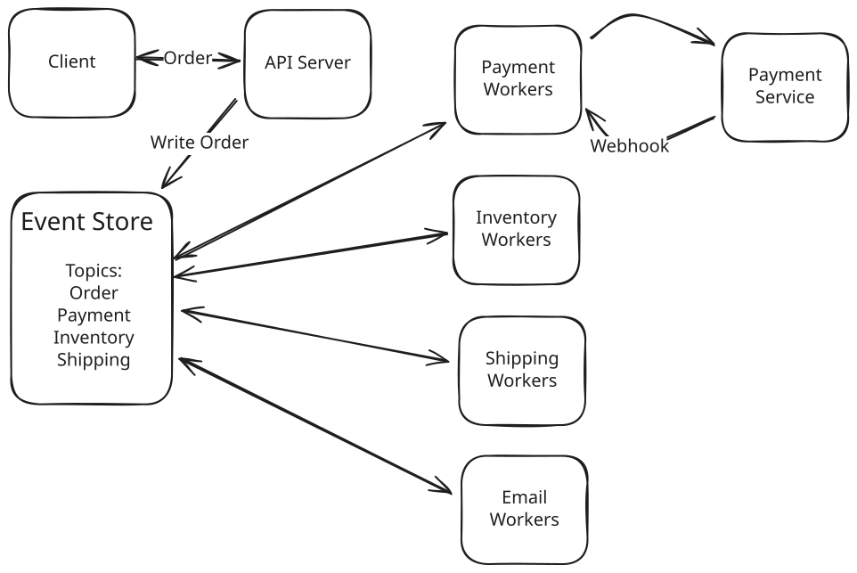
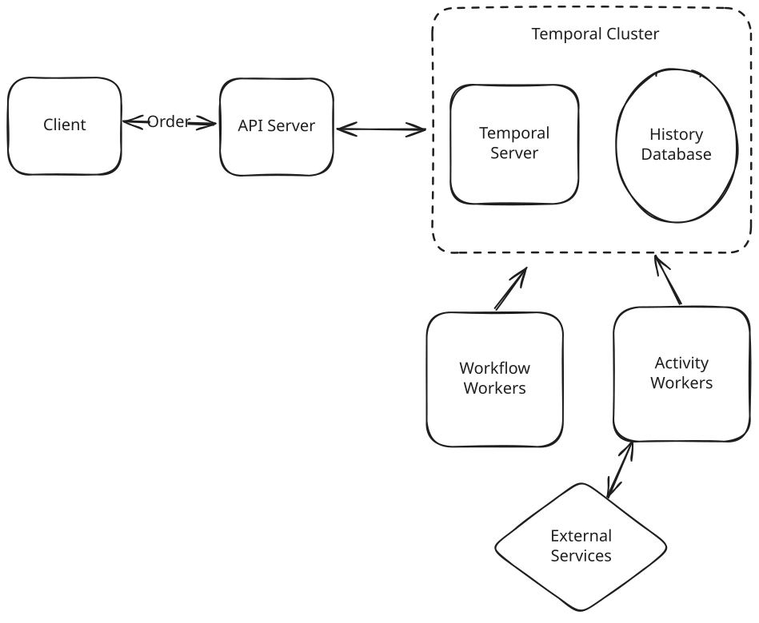
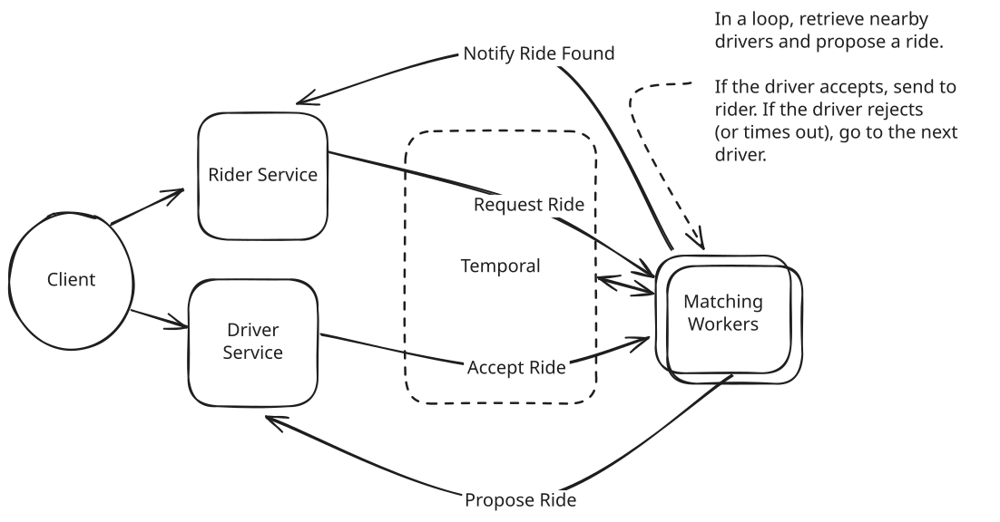

Patterns
Multi-step Processes
Learn about multi-step processes and how to handle them in your system design with distributed transactions, sagas, workflow systems, and durable execution.
Multi-step Processes
Updated Jun 11, 2026

Most of system design is about moving data around.
0:00
/
19:31
⚙️ Real production systems must survive failures, retries, and long-running operations spanning hours or days. Often they take the form of multi-step processes or sagas which involve the coordination of multiple services and systems. This is a continual source of operational and design challenges for engineers, with a variety of different solutions.
The Problem
Building reliable multi-step processes in distributed systems is startlingly hard. While clean systems like databases often get to deal with a single "write" or "read", real applications often need to coordinate dozens of (flaky) services and systems to do the user's bidding, and doing this quickly and reliably is a common challenge.
Jimmy Bogard has a great talk about this titled "Six Little Lines of Fail" with the premise that distributed systems make even a simple sequence of steps like this surprisingly hard (if you haven't had to deal with systems like this before, it's a great watch).
Consider an e-commerce order fulfillment workflow: charge payment, reserve inventory, create a shipping label, wait for a warehouse worker to pick the item, and send the confirmation email. Each step involves calling different services or waiting on humans, any of which might fail or timeout. Some steps require us to call out to external systems (like a payment gateway) and wait for them to complete. During the orchestration, your server might crash or be deployed to. And maybe you want to make a change to the ordering or nature of steps! The messy complexity of business needs and real-world infrastructure quickly breaks down our otherwise pure flow chart of steps.

Order Fulfillment Nightmare
There are, of course, patches we can organically make to processes like this. We can fortify each service to handle failures, use delay queues and hooks to handle waits and human tasks, etc. but overall each of these things makes the system more complex and brittle. We interweave system-level concerns (crashes, retries, failures) with business-level concerns (what happens if we can't find the item?). Not a great design!
Workflow systems, event-driven sagas, and durable execution are the solutions to this problem, and they show up in many system design interviews, particularly when there is a lot of state and a lot of failure handling. AI system design interviews lean on this even harder, since agent pipelines are long chains of exactly these flaky, stateful steps. Interviewers love to ask questions about this because it dominates the oncall rotation for many production teams and gets at the heart of what makes many distributed systems hard to build well.
In this article, we'll cover what they are, how they work, and how to use them in your interviews.
Problem Breakdowns with Multi-step Processes Pattern
Solutions
To motivate the discussion, let's work through different approaches to building reliable multi-step processes, starting simple and building up to sophisticated workflow systems, with our e-commerce order fulfillment workflow as the running example.
Single Server Primitives
The simplest thing we can build is let one server handle the whole thing. Our API server gets an order from a user and just walks through the steps in order: charge the payment, reserve the inventory, create the shipping label, send the confirmation email. One after another, top to bottom, then it responds.
async function fulfillOrder(order: Order): Promise<OrderResult> {
try {
await chargePayment(order);
await reserveInventory(order);
// Woops, server crashed here! Sorry, customer!
await createShippingLabel(order);
await sendConfirmationEmail(order);
return { success: true };
} catch (error) {
return { success: false, error: error.message };
}
}
Single Server Primitive
If we'd never had to think about anything going wrong, or scaling, this is exactly where we'd start. But it has at least two serious problems as soon as you need reliability guarantees and more complex coordination.
- Crashes and Failures: What happens when the server crashes after charging payment but before reserving inventory? When the server restarts, it has no memory of what happened.
- Callback Routing: And think about the payment gateway: it doesn't answer on the same connection. Instead it calls us back minutes later with a webhook, an HTTP request the gateway makes to an endpoint we host. If we've scaled out to several API servers behind a load balancer, that callback can land on a completely different host than the one that started the order, and that host has no idea which in-flight order the callback belongs to. Are we stuck with a single host with no way to scale or replicate?
Not really. You could patch over this: persist the order's state to a database after each step so no single host has to remember it, and route callbacks through a pub/sub layer so whichever server is free can load the order and continue where the last one left off. That would give you something like this:

Single Server Orchestration with State
But we still have more problems to solve.
- We're manually building a state machine with careful database checkpoints after each step. And the database remembers our progress, but it doesn't act on it. If a server dies mid-order, the row just sits there. Something has to notice the stalled order, decide which step is safe to retry, and claim the work without a second server grabbing it at the same time. That's a poller, a locking scheme, and retry logic, all hand-rolled.
- We still haven't solved compensation (undoing steps that already committed). If inventory reservation fails, we need to refund the payment. If shipping fails, we need to release the inventory reservation.
The never-ending list is indicative of a structural problem. Our architecture becomes a mess of state management, error handling, and compensation logic scattered across our application servers. The diagram actually doesn't look that bad, but a real world implementation is a tangled ball of wires and spaghetti code.
If you're just reading about systems like this for the first time, these problems might not sound that bad. But if you've operated one, there's a good chance it's been an ongoing source of pain for your company! That's why this pattern tends to show up in interviews: it probes the candidate's experience in addition to their problem-solving knowledge.
Where do we go from here?
The Saga Pattern
Once we start to accumulate a lot of steps and interesting failure handling, we're usually looking at a saga. The word means a long, detailed series of events (think the Star Wars saga), which is exactly what these processes become.
In software, a saga is a sequence of local steps where each step has a matching compensating action that undoes it. You run the steps one at a time, and if a later one fails, you walk backwards firing those compensations to unwind whatever already happened.
Why not just wrap all the steps in one big distributed transaction? Because nobody can hold a lock that long. Two-phase commit keeps every participant locked while the slowest one decides, a stalled coordinator stalls everyone, and external systems like your payment gateway don't speak your transaction protocol anyway. No amount of cleverness gets us atomicity across services we don't control. Sagas accept this and work with it: rather than guaranteeing that all the steps happen together or not at all, they guarantee that whatever did happen can be undone.
Our order is a textbook saga: if shipping falls through, you release the inventory and refund the charge. Each step commits on its own, so nothing holds a lock across services while it waits. The price is a brief window of inconsistency. Right after the charge, the customer is out the money for an order that hasn't shipped, so you let the order sit in a "pending" state until it does. And compensations deserve the same paranoia as forward steps: a refund can fail just like a charge, so they need their own retries and idempotency, with a human escape hatch for the ones that still won't go through.
There are two ways to coordinate a saga.
-
The first is called choreography: there is no coordinator at all. Each worker subscribes to the events it cares about, does its piece, and emits new events for the next worker to react to. The overall flow isn't written down anywhere; it emerges from those reactions, like dancers who each know their own steps. Choreography works great for fully independent services (e.g. those owned by independent teams that are not tightly coupled) and for mid-complexity workflows.
-
The other is orchestration, where a single coordinator owns the flow and tells workers what to do. Because the whole sequence lives in one place, orchestration works best for very complex workflows where you need central control and visibility.
Either way, that coordination has to survive crashes. If the thing running your saga dies after charging the payment but before reserving inventory, it has to come back and know exactly where it left off. That bookkeeping, state that outlives crashes, retries, and all the compensation logic, is the hard part, and it's the part we'd rather not build by hand.
Event-Driven Choreography
If we want to move toward choreography, a more principled evolution of our primitive single-server approach is to stop storing the current state and instead store the stream of events that got us there, then let workers react to those events to drive the process forward.
The most common way to store events is to use a durable log and Kafka is a popular choice, although Redis Streams could work in some places. If you've heard the term event sourcing, it's a close cousin: event sourcing treats this log as the source of truth and derives state from it, while here we're mainly using the log to coordinate work. The two often travel together but don't have to.

Event Store
The event store does double duty: it holds the entire history of the system, and it drives the next steps. Whenever something happens that we need to react to, we write an event to the store. Workers (ordinary service processes subscribed to the log) consume events, perform their work, and emit new events.
So the payment worker sees "OrderPlaced" and calls our payment service. When the payment service calls back later with the status, the Payment Worker emits "PaymentCharged" or "PaymentFailed". The inventory worker sees "PaymentCharged" and emits "InventoryReserved" or "InventoryFailed". And so on. Compensation flows the same way, just backwards: the payment worker also subscribes to "InventoryFailed", and reacts by issuing the refund and emitting "PaymentRefunded".
Our API service is now just a thin initiating wrapper around the event store. When the order request comes in, we emit an "OrderPlaced" event and the system springs to life to carry the event through the system. Rather than services exposing APIs, they are now just workers who consume events.
LinkedIn has a great post from 2013 about architecture around durable logs which may help you to understand the intuition behind using durable logs for this pattern.
This gives us:
- Fault tolerance: Workers consume the log as a consumer group, committing their position only after an event is fully processed. If a worker dies, its partitions are reassigned and the next worker resumes from the last committed position, so nothing is lost. Some events may get processed twice in the handoff, which is why workers need to be idempotent (a theme that will keep coming back).
- Scalability: We can add more workers to handle higher load, up to the topic's partition count.
- Observability: The log itself is a complete audit trail of everything that happened.
- Flexibility: Appending a new reaction is easy, since it's just a new worker consuming existing events. Inserting a step into the middle of the chain is harder: the neighbors' event contracts have to change.
Good stuff! But we're building significant infrastructure to make it work like event stores, message queues, and worker orchestration. For complex business processes, this becomes its own distributed systems engineering project.
The audit trail is real, but the hard part is making sense of it at scale. Why was there no worker pool to pick up this particular PaymentFailed event? What chain of events led to this InventoryReserved event? Answering those means building tooling on top of the log. Thousands of redundant internal tools have been built across the industry to do exactly that, and good engineers will be skeptical of oversimple solutions to these problems.
All told, choreography is a good solution for mid-complexity processes. Past that, the implicit flow becomes the problem: no single place knows the whole sequence, so changing it means changing event contracts across many workers. The hairiest workflows want a central coordinator, which brings us to orchestration.
Workflow Orchestration
For orchestration, what we really want to do is to describe a workflow, a reliable, long-running process that can survive failures and continue where it left off. Our ideal system needs to be robust to server crashes or restarts instead of losing all progress and it shouldn't require us to hand-roll the infrastructure to make it work.
Enter workflow systems and durable execution engines. These give you the event-driven benefits we just covered plus a durable saga coordinator, without requiring you to build the infrastructure yourself. Just as Flink gives you a higher-level way to describe streaming event processing, workflow systems and durable execution engines give you a language to describe the high-level flow of your system while they handle the orchestration. Where the two camps differ is in how those workflows are described and managed.
Durable Execution Engines
Durable execution is a way to write long-running code that can move between machines and survive system failures and restarts. Instead of losing all progress when a server crashes or restarts, durable execution systems automatically resume workflows from their last successful step on a new, running host. Most durable execution engines use code to describe the workflow. You write a function that represents the workflow, and the engine handles the orchestration of it.
The most popular durable execution engine is Temporal, a 2019 fork of Cadence, the engine its founders built at Uber after working on AWS's Simple Workflow Service. The lineage shows: it's mature, open source, and used by many large companies.
For example, here's a simple workflow in Temporal:
const {
processPayment,
reserveInventory,
shipOrder,
sendConfirmationEmail,
refundPayment
} = proxyActivities<Activities>({
startToCloseTimeout: '5 minute',
retry: {
maximumAttempts: 3,
}
});
async function myWorkflow(input: Order): Promise<OrderResult> {
const paymentResult = await processPayment(input);
if(paymentResult.success) {
const inventoryResult = await reserveInventory(input);
if(inventoryResult.success) {
await shipOrder(input);
await sendConfirmationEmail(input);
return { success: true };
} else {
await refundPayment(input);
return { success: false, error: "Inventory reservation failed" };
}
} else {
return { success: false, error: "Payment failed" };
}
}If this looks a lot like the single-server orchestration we saw earlier, that's because it is! The big difference is how this code is run, and it's worth understanding in some detail because it'll help you understand what's actually going on here.
How Durable Execution Works
Almost all durable execution engines operate the same way but we'll use Temporal as an example. Temporal builds everything from two pieces: a Workflow is the high-level flow of your system, and an Activity is one step in that flow. Picture the Workflow as the recipe (the ordered steps and the decisions between them), and the Activities as the individual cooking actions that actually touch the outside world, like calling a service, charging a card, or sending an email.
Each piece carries one obligation. Workflow code must be deterministic: given the same inputs and history, it always makes the same decisions. The TypeScript SDK sandboxes the runtime to help enforce this, so timestamps and random numbers replay consistently, and anything genuinely nondeterministic, like a network call or a database read, belongs in an Activity. Activities, in turn, need to be idempotent: safe to attempt more than once. Temporal won't retry an Activity that reported success, but a crash can leave the engine unsure whether one finished, and in that gray zone it retries. Idempotency makes that retry harmless.
Why determinism? Because recovery works by replay. Every Activity result is recorded into a history database, and if a workflow runner crashes, another runner re-executes the Workflow function from the top. Every time the replay hits an Activity that already ran, the history hands back the recorded result instead of running it again. Because the code is deterministic and no Activities re-fire, replay is side-effect free, and execution lands exactly where it left off.
Let's run our order through a crash to make that concrete:
- myWorkflow starts. processPayment runs and its result lands in history.
- reserveInventory runs and its result lands in history.
- The server executing the workflow dies.
- A new worker picks up the workflow and re-executes myWorkflow from the top. At processPayment the history already holds a result, so the engine returns it without calling the payment service again. Same at reserveInventory.
- The replay reaches shipOrder, finds nothing in history, and execution continues live from the exact point the crash interrupted.
The customer was charged once, the inventory was reserved once, and none of the business code had to know a crash happened.
A typical Temporal deployment has a lot in common with the event-driven choreography we just covered:
- Temporal Server: The bookkeeper. It hands out tasks, tracks timeouts, and records progress. It never runs your code.
- History Database: Append-only log of all workflow decisions and Activity results
- Worker Pools: Processes you run that host your code. Workflow workers run the Workflow function to decide what happens next, and activity workers execute the Activities. (One process can host both; teams often split them for isolation.)

(Simplified) Temporal Deployment
The division of labor trips people up, so let's be concrete. When myWorkflow hits await processPayment(input), the workflow worker doesn't call the payment service itself. It tells the Temporal Server "schedule this Activity", and the server queues the task for an activity worker, which makes the actual call and reports the result back. The workflow worker then picks the workflow up where the recorded history ends and decides the next step. The big difference from choreography is that the flow lives explicitly in one piece of code, rather than implicitly in which workers consume which topics.
Workflows can also use signals to wait for external events. For example, if you're waiting for a human to pick up an order, your workflow can wait for a signal that the human has picked up the order before continuing. Most durable execution engines provide a way to wait for signals that is more efficient and lower-latency than polling. While it waits, the workflow isn't holding a thread or burning CPU. The engine persists its state and frees the worker to do other work, then rehydrates the workflow when the signal arrives. That's how a workflow can "wait" 30 days for a signature without costing you anything in the meantime.
Managed Workflow Systems
Managed workflow systems take a more declarative approach. Instead of writing code that looks like regular programming, you describe the workflow as a state machine or DAG (directed acyclic graph) in JSON, YAML, or a specialized DSL, and the engine runs it. The most popular are AWS Step Functions and Google Cloud Workflows.
Here's the same order fulfillment workflow in AWS Step Functions:
{
"Comment": "Order fulfillment workflow",
"StartAt": "ProcessPayment",
"States": {
"ProcessPayment": {
"Type": "Task",
"Resource": "arn:aws:lambda:us-east-1:123456789012:function:processPayment",
"Next": "CheckPaymentResult",
"Catch": [
{
"ErrorEquals": ["States.TaskFailed"],
"Next": "PaymentFailed"
}
]
},
"CheckPaymentResult": {
"Type": "Choice",
"Choices": [
{
"Variable": "$.paymentResult.success",
"BooleanEquals": true,
"Next": "ReserveInventory"
}
],
"Default": "PaymentFailed"
},
/** More and more lines of ugly, declarative JSON ... **/
}
}Ugly but functional! In practice, if you're in an AWS shop you'd rarely hand-write this: tools like the AWS CDK generate the same state machine from real code. So go easy on the "ugly JSON" complaint, especially at Amazon, where your interviewer probably writes CDK and may hear it as a gap in your AWS knowledge. The deeper limitation isn't the syntax, it's that your logic still has to fit the state machine model, however you author it.
Under the covers the managed workflow systems are doing the same thing as the durable execution engines: they are orchestrating a workflow, calling activities, and recording progress in such a way that they can be resumed in the case of failures.
The declarative approach has real advantages, the biggest being that workflows can be visualized as diagrams, which makes for a much nicer UI. The cost is expressiveness: you may find yourself writing a lot of custom code to squeeze your logic into the declarative model.
Ultimately, the decision to use a declarative workflow system versus a more imperative, code-driven approach depends largely on the preferences of the team and rarely is a point of debate in a system design interview. Both can be made to work for similar purposes.
Implementations
Both approaches provide durable execution so your workflow's state persists across failures, restarts, and even code deployments. The recovery mechanics differ: engines like Temporal rebuild a workflow's state by replaying your code against the recorded history, while managed systems like Step Functions track the state machine's position server-side and simply continue from it. Either way, you can write logic very similar to the single-server orchestration we saw earlier, but with the added guarantees of fault-tolerance, scalability, and observability.
Temporal is the most powerful open-source option. Workflows can wait for days or months, survive crashes, and keep a complete history of every decision they make. Because workflows are just code, you get loops, conditionals, and complex branching for free. The catch is you have to operate it (or buy Temporal Cloud).
AWS Step Functions is the managed, serverless counterpart. You define workflows as state machines in JSON, which is less expressive than code, but there are no clusters to run. Its standard workflows cap execution duration at one year and payloads between states at 256KB.
Durable Functions (Azure) and Google Cloud Workflows provide similar cloud-native options. They're easier to operate than Temporal but less flexible.
Apache Airflow excels at scheduled batch workflows but wasn't designed for event-driven, long-running processes. Its DAGs are defined in Python code rather than declarative JSON, and it's great for ETL (extract-transform-load) data pipelines, less suitable for user-facing workflows.
Newer entrants like DBOS (durable execution layered on Postgres), Hatchet, and Netflix's Conductor (JSON-defined workflows) come up occasionally and are fine to name-drop if asked. Temporal and Step Functions still cover the vast majority of interviews.
For interviews, the specific pick matters less than you'd think. These tools are nearly interchangeable in a design discussion, and what gets you marked down isn't the choice, it's not understanding how the one you chose works. Pick one, know its recovery model and its limits, and be ready to say why it fits your problem.
When to Use in Interviews
Workflow systems shine in specific scenarios. Don't force them into every design; recognize when their benefits outweigh the complexity. The topic shows up at every level, but the depth expected scales with seniority: for mid-level candidates, spotting that a problem needs a workflow engine and naming one is usually enough, while senior and staff candidates should expect to defend the choice, walk through failure handling and compensation, and field the deep dives below.
Common interview scenarios
Workflows often show up when there is a state machine or a stateful process in the design. If you find a sequence of steps that require a flow chart, there's a good chance you should be using a workflow system to design the system around it.
A couple examples:
Payment Systems: In Payment Systems or systems that engage with them (like e-commerce systems), there's frequently a lot of state and a strong need to be able to handle failures gracefully. You don't want a user to end up with a charge for a product they didn't receive!
Human-in-the-Loop Workflows: In products like Uber, there are a bunch of places where the user is waiting on a human to complete a task. When a user requests a driver, for instance, the driver has to accept the ride. These make for great workflow candidates.

Workflow in an Interview
In your interview, listen for phrases like "if step X fails, we need to undo step Y" or "we need to ensure all steps complete or none do." That's a clear signal for workflows.
When NOT to use it in an interview
Most CRUD operations, simple request/response APIs, and single-service operations don't need workflows. Don't overcomplicate:
Simple async processing: If you just need to resize an image or send an email, use a message queue. Workflows are overkill for single-step operations.
Synchronous operations: If the client waits for the response, or there is a lot of sensitivity around latency, you probably don't need (or can't use) a workflow. Save them for truly async, multi-step processes.
High-frequency, low-value operations: Workflows add overhead. Every activity costs round trips through the engine plus a handful of history writes, so for millions of simple operations the cost and complexity aren't justified.
In interviews, demonstrate maturity by starting simple. Only introduce workflows when you identify specific problems they solve: partial failure handling, long-running processes, complex orchestration, or audit requirements. Show you understand the tradeoffs.
Common Deep Dives
Interviewers often probe specific challenges with workflow systems, and a few come up again and again.
"What happens if the process running your saga crashes partway through?"
This is the failure mode a saga has to get right. Say you've charged the payment and reserved the inventory, and the process dies before it ships. When it comes back, what does it actually know? If you were only tracking progress in memory, the answer is nothing, and now you can't tell whether to push forward, retry the last step, or run compensations to unwind what already happened.
The fix is durable progress. You record which steps have completed to a store that survives the crash, so on restart the coordinator reads that record and knows exactly where it left off. From there it either resumes forward or fires the compensations to roll back. Because a recovering coordinator might re-run a step it isn't sure finished, those steps and their compensations need to be idempotent (more on that in the exactly-once deep dive below).
This durable bookkeeping is exactly what a workflow engine gives you for free. It records every completed step in history and resumes the saga on a new worker after a crash, so you get crash-safe progress without hand-rolling the checkpointing yourself.
"How will you handle updates to the workflow?"
The interviewer asks: "You have 10,000 running workflows for loan approvals. You need to add a new compliance check. How do you update the workflow without breaking existing executions?"
The challenge is that workflows can run for days or weeks. You can't just deploy new code and expect running workflows to handle it correctly. If a workflow started with 5 steps and you deploy a version with 6 steps, what happens when it resumes?
Workflow versioning and workflow migrations are the two main approaches to this.
Workflow Versioning
In workflow versioning, we simply create a new version of the workflow code and deploy it separately. Old workflows will continue to run with the old version of the code, and new workflows will run with the new version of the code.
This is the simplest approach but it's not always feasible. If you need the change to take place immediately, you can't wait for all the legacy workflows to complete.
Workflow Migrations
Workflow migrations are a more complex approach: you update the workflow definition in place so that running executions can pick up the change.
Declarative workflow systems give you less migration to do, but also less control. In AWS Step Functions, a running execution is pinned to the definition it started with, so updating the state machine only affects new executions. If in-flight executions genuinely need the new step, you stop and restart them, or model the branch into the definition ahead of time.
With durable execution engines, you'll often use a "patch" to decide deterministically which path a given workflow should take. The patched() call returns true for new executions (and for in-flight ones that reach this point for the first time), so they run the new behavior. Executions whose recorded history already extends past this point from running the old code return false and stay on the legacy behavior. That way a single deploy can serve both old and new workflows without breaking replay.
if (workflow.patched("change-behavior")) {
await a.newBehavior(); // new executions take this path
} else {
await a.legacyBehavior(); // workflows that ran before the patch stay here
}"How do we keep the workflow state size in check?"
When using a durable execution engine like Temporal, the entire history of the workflow execution needs to be persisted. When a worker crashes, the workflow is replayed from the beginning, using the results in the history of previous activity invocations instead of re-running the activities. This means your workflow state can grow very large very quickly, and some interviewers like to poke on this.
There's a few aspects of the solution: first, we should try to minimize the size of the activity input and results. If you can pass an identifier which can be looked up in a database or external system rather than a huge payload, you can do that.
Second, we can periodically snapshot a long-running workflow and hand off to a fresh copy of itself. Temporal calls this "Continue-as-New". Instead of dragging the full event history along, you capture the workflow's current state, start a new run with an empty history, and seed it with just that state so it picks up right where the old one left off. The new run starts at the current position, not back at step 1. This is the standard fix for workflows that loop for a long time or rack up huge histories, like a per-user workflow that keeps processing events for months.
"How do we deal with external events?"
The interviewer asks: "Your workflow needs to wait for a customer to sign documents. They might take 5 minutes or 5 days. How do you handle this efficiently?"
Workflows excel at waiting without consuming resources, using signals for external events. Here's the document-signing flow in Temporal's TypeScript SDK:
const documentSigned = defineSignal<[SignatureData]>('documentSigned');
// sendForSignature, sendReminder, etc. are proxied activities
async function documentSigningWorkflow(docId: string) {
let signature: SignatureData | undefined;
setHandler(documentSigned, (data) => { signature = data; });
await sendForSignature(docId);
// Wait up to 30 days for the signature
if (!(await condition(() => signature !== undefined, '30 days'))) {
await sendReminder(docId);
// One more week, then give up
if (!(await condition(() => signature !== undefined, '7 days'))) {
await cancelDocument(docId);
return;
}
}
await processSignature(signature);
}External systems deliver signals through the workflow engine's API. When the signing service's webhook fires, the handler calls the engine with the workflow's ID, and the engine wakes the right execution. In the meantime the waiting workflow holds no thread and no worker memory, just persisted state and a durable timer. This pattern handles human tasks, webhook callbacks, and integration with external systems.
"How can we ensure X step runs exactly once?"
Most workflow systems provide a way to ensure an activity runs exactly once ... for a very specific definition of "run". If the activity finishes successfully, but its success report never reaches the workflow engine, the engine will retry the activity. This might be a bad thing if the activity is a refund or an email send.
The solution is to make the activity idempotent. This means that the activity can be called multiple times with the same inputs and get the same result. Storing off a key to a database (e.g. the idempotency key of the email) and then checking if it exists before performing the irreversible action is a common pattern to accomplish this.
Sharp readers will notice the check and the action still aren't atomic: the process can die after sending the email but before recording the key. You can't close that window completely, but you can shrink it by recording state on both sides of the action, marking the key IN_PROGRESS before and COMPLETED after. A retry that finds COMPLETED skips the action, a retry that finds nothing proceeds, and the rare IN_PROGRESS case is the only one that needs real care: park it for reconciliation (e.g. ask the email provider what it received) rather than blindly re-firing.
The precise version of the guarantee is that attempts are at-least-once, and it's the effect that's exactly-once, because the idempotency check makes repeat attempts harmless. (True exactly-once delivery is impossible across a network, which is exactly why we lean on idempotency.) None of this means you should keep side effects out of activities. Charging a card or sending an email is a perfectly good activity, and idempotency makes those side effects safe to retry.
Conclusion
Workflow systems are a perfect fit for hairy state machines that are otherwise difficult to get right. They allow you to build reliable distributed systems by centralizing state management, retry logic, and error handling in a purpose-built engine. This lets us write business logic that reads like business requirements, not infrastructure gymnastics.
Most of the skill here is recognizing when you're manually building what a workflow engine provides: state persistence across failures, orchestration of multiple services, handling of long-running processes, and automatic retries with compensation. If you find yourself implementing distributed sagas by hand or building state machines in Redis, it's time to consider a workflow system.
Be ready to discuss the tradeoffs. Yes, you're adding operational complexity with another distributed system to manage. Yes, there's a learning curve for developers. But for the right problems, it's the difference between an oncall rotation that dreads stuck orders and one that reads the workflow history and moves on.
Test Your Knowledge
Answer the question below to find your gaps.
Question 1 of 15
What is the primary challenge that multi-step processes address in distributed systems?
1
Database scaling
2
Coordinating multiple services reliably across failures and retries
3
High read volume across database shards
4
Network latency